Stat 470/670 Lecture 11: Trivariate Data
Julia Fukuyama
Trivariate data
Reading: Cleveland pp. 184-190, 194-199, 204-205 (LOESS with more
than one predictor variable)
Today: Trivariate data; coplots and interactions
Questions we will want to answer:
- How can we describe the dependence of a response variable on two
predictors?
- If we “hold one predictor constant,” what does the relationship
between the other predictor and the response look like?
- How can we identify interactions between the predictors?
- How can we model interactions between the predictors?
Example: Birth weight, gestational age, mother’s age
We have a dataset containing a subset of the live birth data that the
CDC collects.
Our subset contains information on
- Gestational age of baby at the time of birth
- Mother’s age at the time of birth
- Weight of baby at time of birth
We want to know about the relationship between birth weight and the
other two variables.
Before we try to see what’s going on with all three, we need to look
at what the marginal relationships between each pair look like (marginal
means not conditioning on anything else).
I’m getting the mean birthweight for each gestational age and the
mean birth weight for each mother’s age to deal with the overplotting
that we would otherwise have.
live_births = read.csv("denom-data-subset.csv")
live_births |> group_by(gest_age) |> summarise(bw = mean(birth_weight)) |>
ggplot() + geom_point(aes(x = gest_age, y = bw))
live_births |> group_by(mothers_age) |> summarise(bw = mean(birth_weight)) |>
ggplot() + geom_point(aes(x = mothers_age, y = bw))
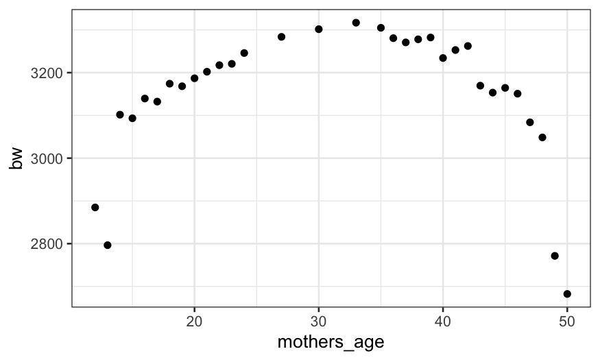
Gestational age (unsurprisingly) has a huge effect on birth weight.
Mother’s age also has an effect on birth weight, but it is much smaller
and not monotonic. Could it be that there is a relationship between
mother’s age and gestational age that makes it look like there is a link
between mother’s age and birth weight?
live_births |> group_by(mothers_age) |> summarise(ga = mean(gest_age, na.rm = TRUE)) |>
ggplot() + geom_point(aes(x = mothers_age, y = ga))
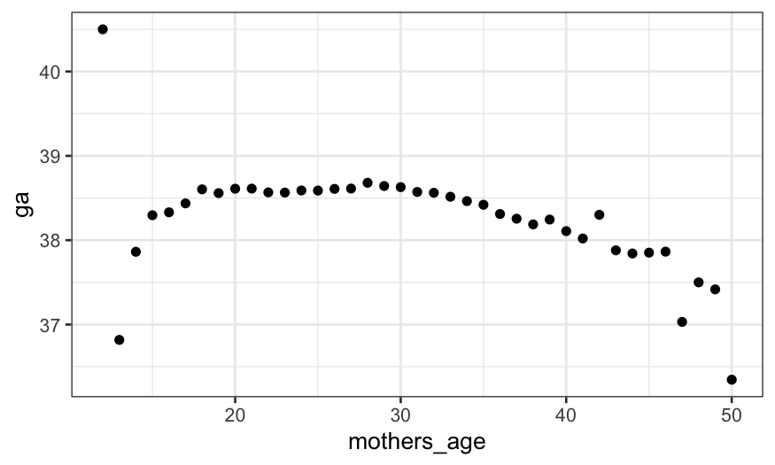
A better way to look at this is to look at the effect of mother’s age
holding gestational age constant (in statistics-speak,
“conditioning on” gestational age.)
Below, each facet shows birth weight as a function of mother’s age
for each value of gestational age.
live_births |>
group_by(mothers_age, gest_age) |>
summarise(bw = mean(birth_weight)) |>
ggplot() + geom_point(aes(x = mothers_age, y = bw)) + facet_wrap(~ gest_age, scales = "free_y")
## `summarise()` has grouped output by 'mothers_age'. You can override using the
## `.groups` argument.
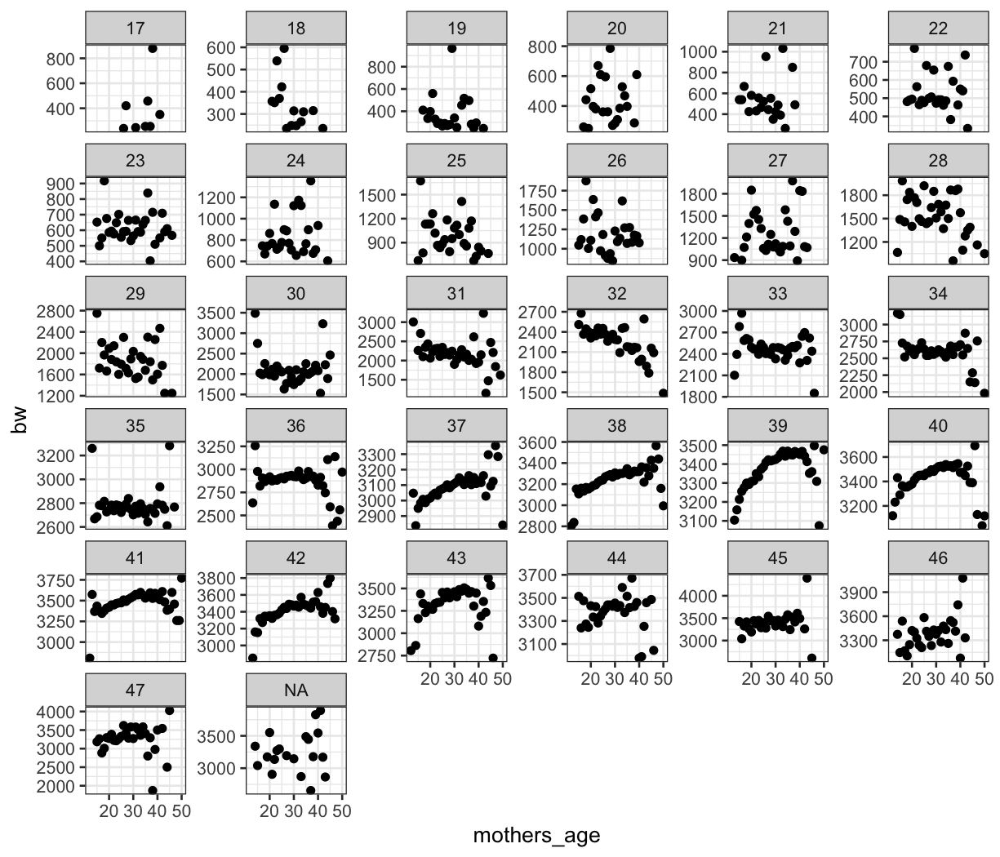
For gestational ages below 35 and above 43 there is a lot of noise,
but we can see some patterns.
- For gestational ages of 39 and 40, there is a clear pattern of birth
weight increasing with mother’s age up to about mother’s age of 40
followed by a decrease with mother’s age over 40.
- This same pattern might hold for gestational ages 36-38 and 41-44,
but there’s enough noise that it’s hard to tell.
- Below 36 weeks, if we can see a pattern, it seems to be different:
birth weight monotonically declines with mother’s age.
Summing up
- We look at the marginal relationships between each predictor and the
response (that is, look at the relationship between one predictor and
response without trying to hold the other predictor constant).
- We look at the conditional relationship between one predictor and
the response holding the other constant.
Additive vs. interaction models
Suppose we have a response variable, \(y\), and two predictor variables, \(u\) and \(v\).
The additive model is \[
y = \beta_0 + \beta_1 u + \beta_2 v + \varepsilon
\] with \[
\varepsilon \sim N(0, \sigma^2)
\]
The interaction model is \[
y = \beta_0 + \beta_1 u + \beta_2 v + \beta_3 uv + \varepsilon
\] with \[
\varepsilon \sim N(0, \sigma^2)
\]
- In the additive model, the relationship between \(y\) and \(u\) has the same slope for every value of
\(v\).
- In the interaction model, there is a different slope for the
relationship between \(y\) and \(u\) for every value of \(v\).
Coplots
Coplots help us answer the question “How does the relationship
between two variables change given the value of a third variable?”
A coplot is defined by three variables:
- response: The variable plotted along the \(y\)-axis.
- predictor: The variable plotted along the \(x\)-axis.
- given: The variable used for faceting. If the “given” variable is
categorical, we facet in the usual way, with one facet for each value of
the given variable. Otherwise, we break the observations into groups
that have similar values of the given variable and facet on those
groups.
The plot of birth weight by mother’s age conditional on gestational
age above was an example of a coplot.
Coplots with categorical variables
We’ve seen coplots for categorical variables before. Remember our
diamonds example from last time, where we were interested in the three
variables:
price: How much the diamond sold for.
carat: How big the diamond is.
clarity: How clear it is. This is a factor or
categorical variable, higher clarities tend to be more rare and
expensive.
ggplot(diamonds, aes(x = carat, y = sqrt(price))) +
geom_point(size = .1) +
stat_smooth(method = "lm", se = FALSE) +
ylab("Square root of price") +
facet_wrap(~ clarity)
## `geom_smooth()` using formula = 'y ~ x'
This allows us to answer the question: “How does the relationship
between carat and price change with clarity?”
Coplots with continuous variables
We saw this example last time, in the ethanol dataset.
We had the variables
NOx: Concentration of NO plus NO2 (NOx), divided by the
amount of work the engine did.
E: The equivalence ratio at which the engine was run,
measuring the richness of the mixture of air and fuel (morue fuel =
higher E).
C: The compression ratio to which the engine was set,
that is, the maximum volume inside the cylinder (volume with piston
retracted) divided by the minimum volume inside the cylinder (volume
with piston at maximal penetration).
## Error in library(GGally): there is no package called 'GGally'
## Error in ggpairs(ethanol): could not find function "ggpairs"
Important note: The relationship between NOx and
C is very weak, but as we will see, C is still
important for modeling NOx. Small marginal correlations
don’t mean that a variable can be excluded from the model!
Here we could condition easily on C because although it
is technically continuous, it only took five distinct values.
We made this plot:
ethanol = ethanol %>% mutate(Cfac = factor(C, levels = sort(unique(C)), ordered = TRUE))
ggplot(ethanol, aes(x = E, y = NOx, color = Cfac)) +
geom_point() + facet_wrap(~ Cfac) +
guides(color = guide_legend(title = "C")) +
stat_smooth(method = "loess", se = FALSE)
## `geom_smooth()` using formula = 'y ~ x'
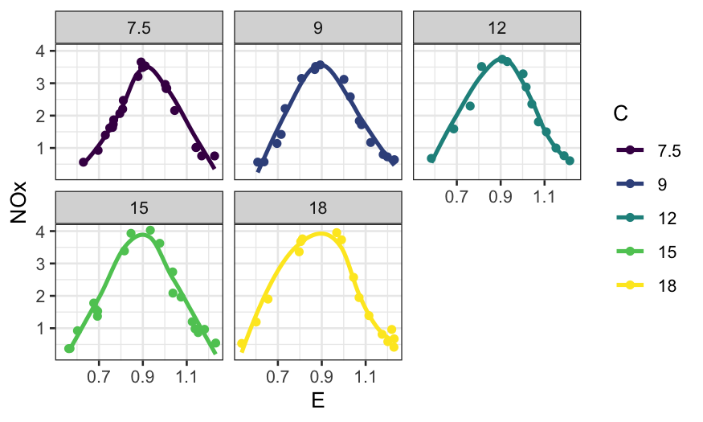
in an attempt to answer the question of how the relationship between
NOx and E changes given C.
Coplots with truly continuous variables
With continuous variables, instead of taking each facet to represent
all the points with a single value of the given variable, we take each
facet to represent all the points for which the value of the given
variable lies in a certain interval.
Concretely:
- Define \(I\) intervals \([a_1, b_1], [a_2, b_2], \ldots, [a_I,
b_I]\).
- Facet \(i\) of the coplot contains
all the points for which the value of the given variable falls in the
\(i\)th interval \([a_i, b_i]\).
- Interpretation: facet \(i\)
represents the conditional dependence of the response on the predictor
when the value of the given variable is approximately \((a_i + b_i) / 2\).
How to define the intervals is up to you; there are defaults in R, or
you can choose yourself.
Notes:
The intervals are allowed to overlap.
Wider intervals have the advantage that you have more points per
facet, allowing you to see patterns more clearly.
Wider intervals have the disadvantage that they have lower
resolution: if the nature of the dependence changes over the range of
given values in the interval, it might be distorted or masked.
ggplot2 doesn’t have coplots built in, but we can make them if we
work hard enough.
make_coplot_df = function(data_frame, faceting_variable, number_bins = 6) {
## co.intervals gets the limits used for the conditioning intervals
intervals = co.intervals(data_frame[[faceting_variable]], number = number_bins)
## indices is a list, with the ith element containing the indices of the
## observations falling into the ith interval
indices = apply(intervals, 1, function(x)
which(data_frame[[faceting_variable]] <= x[2] & data_frame[[faceting_variable]] >= x[1]))
## interval_descriptions is formatted like indices, but has interval
## names instead of indices of the samples falling in the index
interval_descriptions = apply(intervals, 1, function(x) {
num_in_interval = sum(data_frame[[faceting_variable]] <= x[2] & data_frame[[faceting_variable]] >= x[1])
interval_description = sprintf("(%.2f, %.2f)", x[1], x[2])
return(rep(interval_description, num_in_interval))
})
## df_expanded has all the points we need for each interval, and the
## 'interval' column tells us which part of the coplot the point should
## be plotted in
df_expanded = data_frame[unlist(indices),]
df_expanded$interval = factor(unlist(interval_descriptions),
levels = unique(unlist(interval_descriptions)), ordered = TRUE)
return(df_expanded)
}
Once we have defined the function to make the expanded data frame,
the coplot is simply a faceted plot where we facet by
interval.
ethanol_expanded = make_coplot_df(ethanol, "E", 10)
ggplot(ethanol_expanded, aes(y = NOx, x = C)) +
geom_point() +
facet_wrap(~ interval, ncol = 6) +
geom_smooth(method = "loess", se = FALSE, span = 1, method.args = list(degree = 1)) +
scale_x_continuous(breaks = seq(7, 19, by=3)) +
ggtitle("Coplot of NOx ~ C given E")
## `geom_smooth()` using formula = 'y ~ x'
Alternately, with the coplot function:
coplot(NOx ~ C | E, data = ethanol, number = 10)
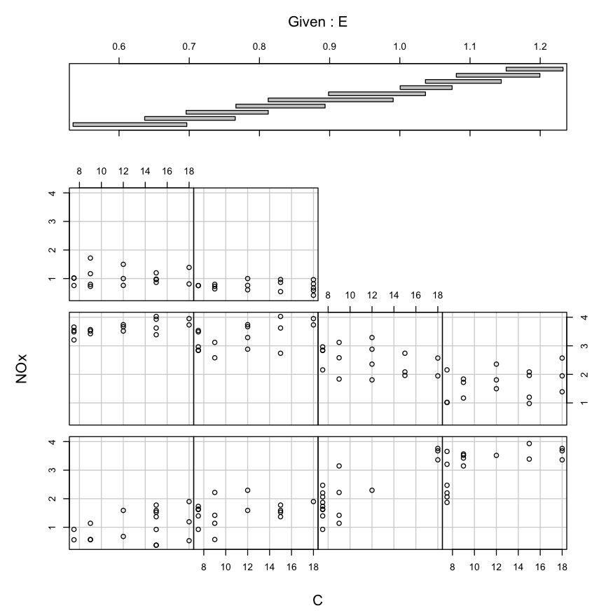
Building a model
Now suppose we want to build a model that describes NOx as a function
of E and C.
Our coplots have told us a couple things about the relationship:
- There is an interaction between E and C.
- Conditionally on E, the relationship between NOx and C looks roughly
linear.
- Conditionally on C, the relationship between NOx and E is
non-linear, and doesn’t look like it belongs to a parametric family at
all.
Recall: LOESS with one predictor variable
We have a response variable \(y\), a
predictor variable \(x\), and \(n\) samples.
To find the value of the LOESS smoother with \(\lambda = 1\) (locally linear fit) at a
point \(x_0\), we solve for the
coefficients in the weighted regression problem \[
(\hat \beta_0, \hat \beta_1) = \text{argmin}_{ \beta_0, \beta_1}
\sum_{i=1}^n w_i(x_0) (y_i - ( \beta_0 + \beta_1 x_i))^2,
\]
To find the value of the LOESS smoother with \(\lambda = 2\) (locally quadratic fit) at a
point \(x_0\), we solve for the
coefficients in the weighted regression problem \[
( \hat \beta_0, \hat \beta_1, \hat \beta_2 ) = \text{argmin}_{
\beta_0, \beta_1, \beta_2} \sum_{i=1}^n w_i(x_0) (y_i - ( \beta_0
+ \beta_1 x_i + \beta_2 x_i^2))^2
\]
The weights are: \[
w_i(x_0) = T(\Delta_i(x_0) / \Delta_{(q)}(x_0))
\] where \(\Delta_i(x_0) = |x_i -
x_0|\), \(\Delta_{(i)}(x_0)\)
are the ordered values of \(\Delta_{i}(x_0)\), and \(q = \alpha n\), rounded to the nearest
integer.
\(T\) is the tricube weight
function: \[
T(u) = \begin{cases}
(1 - |u|^3)^3 & |u| \le 1 \\
0 & |u| > 1
\end{cases}
\]
The value of the LOESS smoother at \(x_0\) is the fitted value of the weighted
regression defined above evaluated at \(x_0\).
Modifying LOESS for two predictor variables
Now we have a response variable \(y\), a predictor variable \(x = (u, v)\), and \(n\) samples.
The parameters are still:
- \(\alpha\): The span, controls the
fraction of points that contribute to the local fit.
- \(\lambda\): The degree of the
local fit, usually \(1\), corresponding
to a locally linear fit, or \(2\),
corresponding to a local quadratic fit.
Suppose \(\lambda = 1\)
To find the value of the LOESS smoother at a point \(x_0 = (u_0, v_0)\), we solve for the
coefficients in the weighted regression problem \[
(\hat \beta_0, \hat \beta_1, \hat \beta_2) = \text{argmin}_{
\beta_0, \beta_1, \beta_2} \sum_{i=1}^n w_i(x_0) (y_i - ( \beta_0
+ \beta_1 u_i + \beta_2 v_i ))^2,
\]
The value of the LOESS smoother at \(x_0\) is then \(\hat \beta_0 + \hat \beta_1 u_0 + \hat \beta_2
v_0\).
If \(\lambda = 2\), to find the
value of the LOESS smoother at a point \(x_0 =
(u_0, v_0)\), we solve for the coefficients in the weighted
regression problem \[
(\hat \beta_0, \hat \beta_1, \hat \beta_2, \hat \beta_3, \hat \beta_4,
\hat \beta_5) = \text{min}_{
\beta_0, \beta_1, \beta_2, \beta_3, \beta_4, \beta_5} \sum_{i=1}^n
w_i(x_0) (y_i - ( \beta_0 + \beta_1 u_i + \beta_2 v_i + \beta_3 u_i
v_i + \beta_4 u_i^2 + \beta_5 v_i^2))^2,
\]
The value of the LOESS smoother at \(x_0\) is then \(\hat \beta_0 + \hat \beta_1 u_0 + \hat \beta_2 v_i
+ \hat \beta_3 u_0 v_0 + \hat \beta_4 u_0^2 + \hat \beta_5
v_0^2\).
Weights for LOESS with two predictors
The weights are: \[
w_i(x_0) = T(\Delta_i(x_0) / \Delta_{(q)}(x_0))
\] with
- \(\Delta_i(x_0) = \sqrt{(u_i - u_0)^2 +
(v_i - v_0)^2}\)
- \(\Delta_{(i)}(x_0)\) are the
ordered values of \(\Delta_{i}(x_0)\)
- \(q = \alpha n\), rounded to the
nearest integer.
Since the two predictor variables are potentially on different
scales, they are usually normalized using a robust estimate of the
spread before the distances are computed. Some options
- Median absolute deviation.
- Trimmed standard deviation.
Cleveland suggests using a 10% trimmed standard deviation as the
measure of spread for normalization.
A useful modification of LOESS
What if we think some of the conditional relations are from a
parametric family? For example, the dependence of NOx on C seems to
always be linear, no matter what value of E we look at.
We can modify LOESS so that it fits some of the conditional relations
globally instead of locally.
Let \(\hat g(u,v)\) be our fitted
LOESS surface, and suppose we want \(\hat g(u,
v)\), seen as a function of \(u\), to be from a parametric family
(e.g. linear or quadratic).
To do this, we simply drop the \(u_i\)’s from our distances when computing
the weights.
Suppose we want to modify locally linear LOESS in this way. To find
the value of the LOESS smoother at a point \(x_0\), we find \(\hat \beta_0, \hat \beta_1, \hat \beta_2, \hat
\beta_3\) as \[
(\hat \beta_0, \hat \beta_1, \hat \beta_2, \hat \beta_3) =
\text{argmin}_{\beta_0, \beta_1, \beta_2, \beta_3} \sum_{i=1}^n w_i(x_0)
(y_i - ( \beta_0 + \beta_1 u_i + \beta_2 v_i + \beta_3 u_i v_i))^2
\] where the weights \(w_i(x_0)\) only take into account the \(v\) coordinates.
The fitted value of the LOESS smoother at \(x_0\), \(\hat
g(x_0) = \hat g(u_0, v_0)\), is then equal to \(\hat \beta_0 + \hat \beta_1 u_0 + \hat \beta_2 v_0
+ \hat \beta_3 u_0 v_0\).
This leads to a fit that is locally linear in \(v\) and globally linear in \(u\), with different slopes in \(u\) conditional on different values of
\(v\).
To check your understanding: how would the fit change if you didn’t
include the \(u_iv_i\) term?
Locally quadratic fit in \(v\) with
a globally quadratic fit in \(u\):
To find the value of the LOESS smoother at a point \(x_0\), we find \(\hat \beta_0, \ldots, \hat \beta_5\) as
\[
(\hat \beta_0, \ldots, \hat \beta_5) = \text{argmin}_{\beta_0, \ldots,
\beta_5}\sum_{i=1}^n w_i(x_0) (y_i - ( \beta_0 + \beta_1 u_i + \beta_2
v_i + \beta_3 u_i v_i + \beta_4 u_i^2 + \beta_5 v_i^2))^2
\] where the weights \(w_i(x_0)\) only take into account the \(v\) coordinates.
The fitted value of the LOESS smoother at \(x_0\), \(\hat
g(x_0) = \hat g(u_0, v_0)\), is then equal to \(\hat \beta_0 + \hat \beta_1 u_0 + \hat \beta_2 v_0
+ \hat \beta_3 u_0 v_0 + \hat \beta_4 u_i^2 + \hat \beta_5
v_i^2\).
Locally quadratic fit in \(v\) with
a globally linear fit in \(u\):
To find the value of the LOESS smoother at a point \(x_0\), we find \(\hat \beta_0, \ldots, \hat \beta_4\) as
\[
\hat \beta_0, \ldots, \hat \beta_4 = \text{argmin}_{\beta_0, \ldots,
\beta_4}\sum_{i=1}^n w_i(x_0) (y_i - ( \beta_0 + \beta_1 u_i + \beta_2
v_i + \beta_3 u_i v_i + \beta_4 v_i^2))^2
\] where the weights \(w_i(x_0)\) only take into account the \(v\) coordinates.
The fitted value of the LOESS smoother at \(x_0\), \(\hat
g(x_0) = \hat g(u_0, v_0)\), is then equal to \(\hat \beta_0 + \hat \beta_1 u_0 + \hat \beta_2 v_0
+ \hat \beta_3 u_0 v_0+ \hat \beta_4 v_i^2\).
LOESS function in R
Arguments to the loess function:
- First argument is the formula: we want to model
NOx as
a function of C and E, with an interaction
between the two variables.
data gives tha data frame the variables come from.
span gives the fraction of the observations that have
non-zero weight for each of the local regressions, the same as \(\alpha\) in the text.
degree gives the degree of the local polynomial. If we
have variables \(u\) and \(v\), degree = \(1\) means the local regressions use \(u\) and \(v\) as predictors, and degree = \(2\) means the local regressions will use
\(u\), \(v\), \(uv\), \(u^2\), and \(v^2\) as predictors.
family is either symmetric or gaussian, gaussian means
the local regressions are fit by least squares, while symmetric means
they are fit with robust regression using Tukey’s biweight.
parametric: The names of variables for which we want to
constrain the fit to be parametric. The parametric fit is achieved by
excluding these variables from the distance calculations when deciding
on observation weights in the local regressions.
drop.square: By default, if degree = \(2\) and one of the variables is constrained
to be fit parametrically, the parametric fit will be of a degree \(2\) polynomial.
drop.square = TRUE changes this so that the parametric fit
is linear instead of quadratic.
LOESS on ethanol data
ethanol_lo = loess(NOx ~ C * E, data = ethanol, span = 1/3, parametric = "C",
drop.square = "C", family = "symmetric")
What do the parameters mean here?
C * E means we want interactions between C
and E.
parametric = "C" means that conditional on
E, we want the fitted function to be linear.
drop.square = "C" means that we don’t want a squared
term in our conditional model of NOx given
C.
family = "symmetric" means we are using a robust
fit.
What do the fitted values look like? First let’s make a coplot of the
fitted value given E.
prediction_grid = data.frame(expand.grid(C = c(7.5, 9, 12, 15, 18), E = seq(0.6, 1.2, by = .05)))
ethanol_preds = augment(ethanol_lo, newdata = prediction_grid)
ggplot(ethanol_preds) +
geom_line(aes(x = C, y = .fitted)) +
facet_wrap(~ E, ncol = 7)
Then a coplot of the fitted values given C.
ggplot(ethanol_preds) +
geom_line(aes(x = E, y = .fitted)) +
facet_wrap(~ C, ncol = 3)
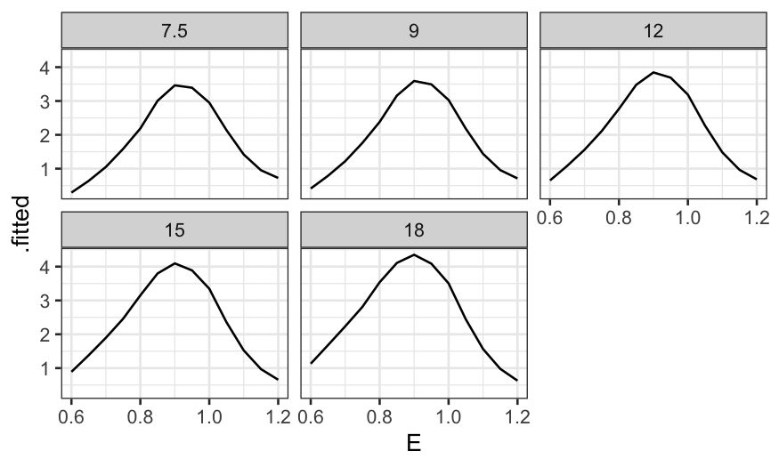
More useful without the faceting:
ggplot(ethanol_preds) +
geom_line(aes(x = E, y = .fitted, color = factor(C, levels = unique(C), ordered = TRUE))) +
guides(color = guide_legend(title = "C"))
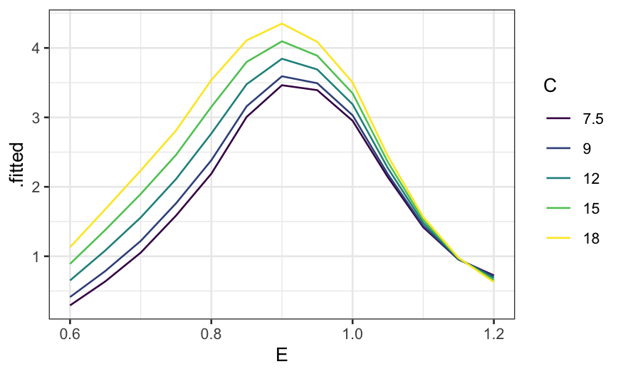
Plotting residuals
Remember augment from broom: if you just
ask it to augment the output from a linear model, it will give back a
data frame with the predictor variables used in the model along with
residuals and fitted values.
Here we’re looking for structure: systematic relationships between
the residuals and the preditor variables. If we see a relationship
between the predictors and the residuals, it indicates that the form of
the model doesn’t fit well and we need to use something more
flexible.
We first look at the residuals by E and
C:
ethanol_resid = augment(ethanol_lo)
ggplot(ethanol_resid, aes(x = E, y = .resid)) +
geom_point() +
stat_smooth(method = "loess", method.args = list(degree = 1, family = "symmetric")) +
scale_y_continuous("NOx Residual")
## `geom_smooth()` using formula = 'y ~ x'

ggplot(ethanol_resid, aes(x = C, y = .resid)) +
geom_point() +
stat_smooth(method = "loess", method.args = list(degree = 1, family = "symmetric")) +
scale_y_continuous("NOx Residual")
## `geom_smooth()` using formula = 'y ~ x'

Note: using the robust version of loess
(family = "symmetric") helps a lot here. If we use the
non-robust version, the loess curve is pulled away from zero by the
outliers.
ethanol_resid = augment(ethanol_lo)
ggplot(ethanol_resid, aes(x = E, y = .resid)) +
geom_point() +
stat_smooth(method = "loess", method.args = list(degree = 1)) +
scale_y_continuous("NOx Residual")
## `geom_smooth()` using formula = 'y ~ x'
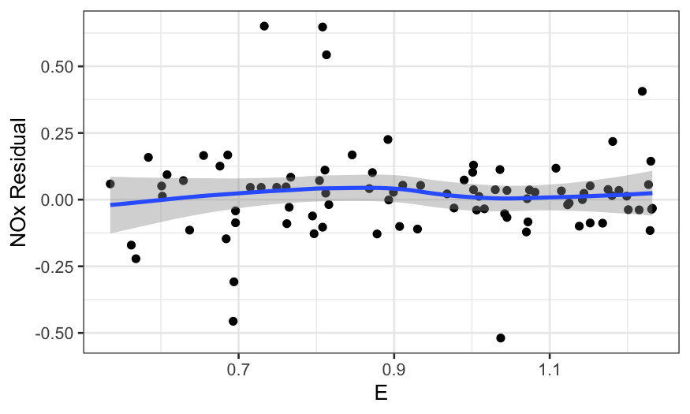
ggplot(ethanol_resid, aes(x = C, y = .resid)) +
geom_point() +
stat_smooth(method = "loess", method.args = list(degree = 1)) +
scale_y_continuous("NOx Residual")
## `geom_smooth()` using formula = 'y ~ x'
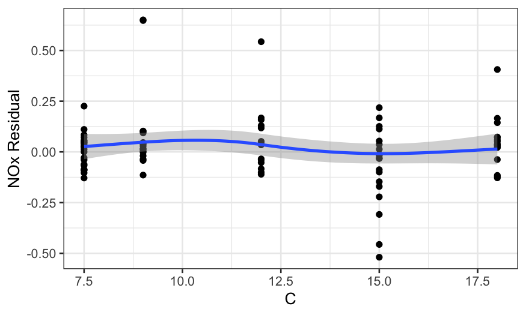
It’s also useful to look at coplots:
ggplot(ethanol_resid, aes(x = E, y = .resid)) +
geom_point() +
facet_grid(~ C) +
stat_smooth(method = "loess", method.args = list(degree = 1, family = "symmetric")) +
scale_y_continuous("NOx Residual")
## `geom_smooth()` using formula = 'y ~ x'
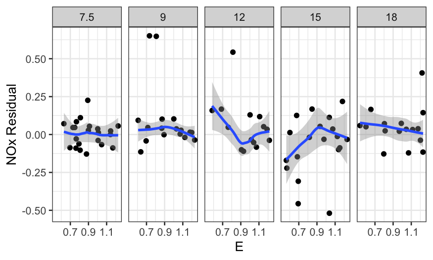
In all of the residual plots, we see outliers, but not any major
dependence of the residuals on the predictors.
Residuals to check model assumptions
It’s also a good idea to check on homoscedasticity and normality of
the residuals.
To check for homoscedasticity, we plot the absolute value of the
residuals by the fitted value:
ggplot(ethanol_resid, aes(x = .fitted, y = abs(.resid))) +
geom_point() +
stat_smooth(method = "loess", method.args = list(degree = 1, family = "symmetric")) +
scale_y_continuous("Absolute value of NOx residual") +
scale_x_continuous("NOx fitted value")
## `geom_smooth()` using formula = 'y ~ x'
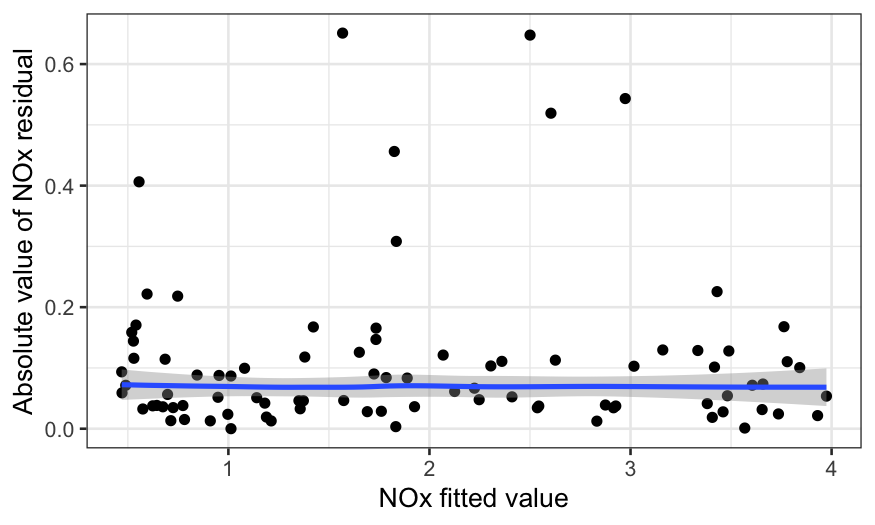
To check for normality, we make a QQ plot:
ggplot(ethanol_resid) + stat_qq(aes(sample = .resid))
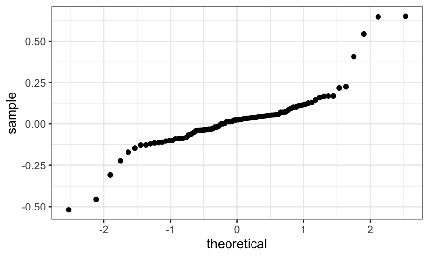
We see that the residuals are quite heavy-tailed. This means:
- It’s good that we used a robust linear model.
- We shouldn’t use normal-theory based confidence intervals or tests
for this data.
What we’ve learned
- NOx depends on equivalence ratio in a non-monotonic way.
- Conditional on equivalence ratio, NOx depends on concentration in an
approximately linear way.
- The interaction is important: there’s no real way to remove it from
the data.
- The usual inference based on an assumption of normal errors is
inappropriate.